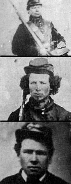

|

NAME: William Stone, Samuel Stone, and Erastus Stone
BORN: William - 1843, Samuel - ?, Erastus - 1845
DIED: William - ?, Samuel - 1864, Erastus - 1916
ALLEGIANCE: Union
HIGHEST RANK: Private
UNITS: William - 50th New York Engineers, Company L; Samuel - 53rd
Pennsylvania Infantry, Company G; Erastus - 15th New York Engineers, Company M
RECORD: William - Enlisted on January 21, 1864;
mustered in two days later. Mustered out June 13, 1865;
Samuel - Enlisted on February 29, 1864. Fought in May 5-7
Battle of the Wilderness. Killed at Spotsylvania on May 12,
1864; Erastus - Enlisted on September 28, 1864. Mustered out
on June 13, 1865.
|
|
Early in 1864, in a rural corner of Pennsylvania not far
from the New York border, three brothers pondered their
future. The Civil War had been raging for three years; the
time for William, Samuel, and Erastus Stone (shown from top
to bottom at left) to join the struggle was now or never.
One by one they joined Federal regiments and went off to
war.
William, or "Harp," as his siblings knew him, was the first
to go. During the third week of January, the 21-year-old
left his native state behind and joined Company L of the
50th New York Engineers. His immediate future would consist
of building roads, bridges, and fortifications in the South
for the Army of the Potomac.
A few weeks later, eldest brother Samuel said goodbye to his
family. He had decided to join a unit from his home
state--the 53rd Pennsylvania Infantry. The 53rd had seen
heavy fighting throughout the war, and would see more. Less
than two months after enlisting, Samuel found himself in the
deadly, tangled woods of Virginia's Wilderness, fighting
alongside thousands of other frightened Union soldiers.
In September 1864, Erastus followed his brothers into the
Union army. The youngest of the three, at age 19, he may
have delayed his decision while waiting to learn the fate of
Samuel, from whom no one had heard since the Wilderness
Campaign. On September 28, Erastus enlisted in the 15th New
York Engineers. Because the unit plied its trade for the
Army of the Potomac, Erastus would at least be relatively
near his brother William.
In June 1865, William and Erastus were mustered out of their
engineer units and returned home. The war was over. But
their happiness at rejoining their families was tempered by
news about their brother Samuel, whose fate had remained a
mystery for nearly a year. First listed as missing, then
captured, Samuel was finally declared to have been killed in
action at Spotsylvania, Virginia, on May 12, 1864. Samuel
left behind his brothers, a young wife, and a baby son born
eight days after his death.
Source: Civil War Times Illustrated
39:1 (March 2000), 80.
|